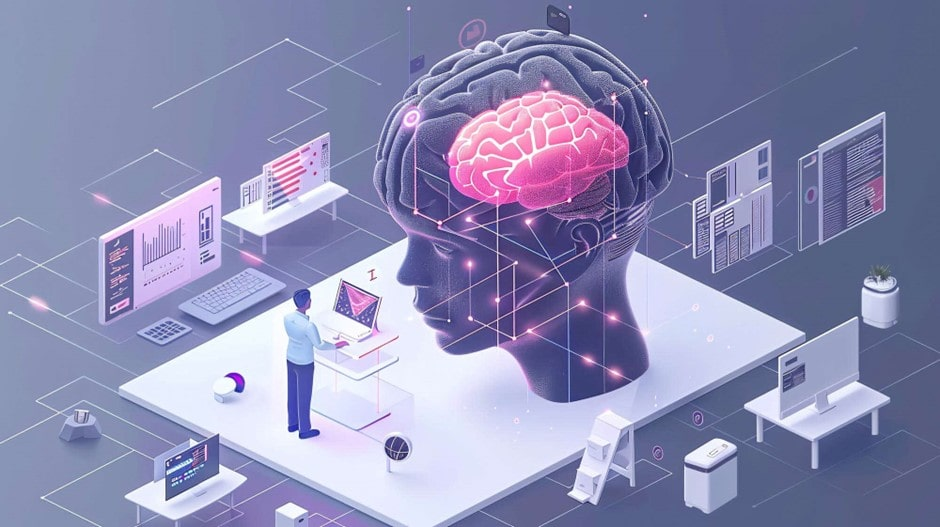

Trong những năm gần đây, trí tuệ nhân tạo (AI) đã không còn là khái niệm xa vời. Tại Việt Nam, hàng loạt startup và doanh nghiệp lớn đã bắt đầu tích hợp AI vào sản phẩm và quy trình vận hành.
Từ trợ lý ảo, phân tích dữ liệu kinh doanh, nhận diện hình ảnh, đến tối ưu hóa chuỗi cung ứng – AI đang hiện diện ở hầu hết các lĩnh vực. Đặc biệt, sau đại dịch, nhu cầu chuyển đổi số tăng vọt đã thúc đẩy làn sóng ứng dụng AI mạnh mẽ hơn bao giờ hết.
Tuy nhiên, thách thức lớn nhất không phải là công nghệ, mà là con người: thiếu nhân lực chất lượng cao, nhận thức về đạo đức AI còn hạn chế, và nguy cơ mất việc làm ở một số ngành truyền thống.